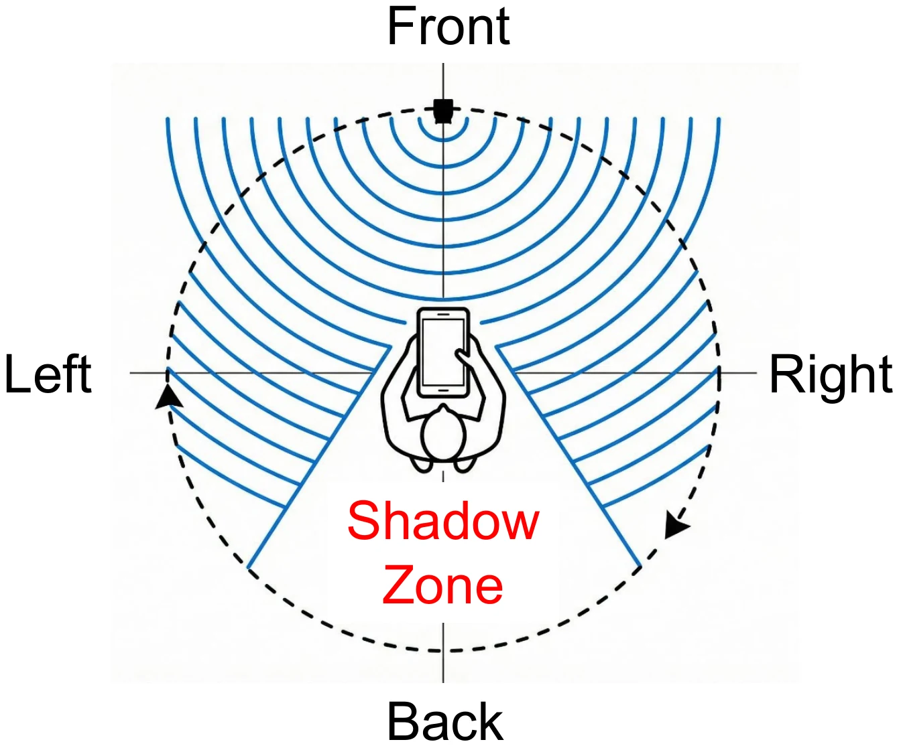
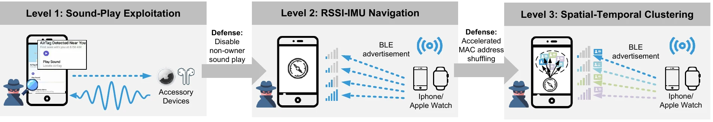
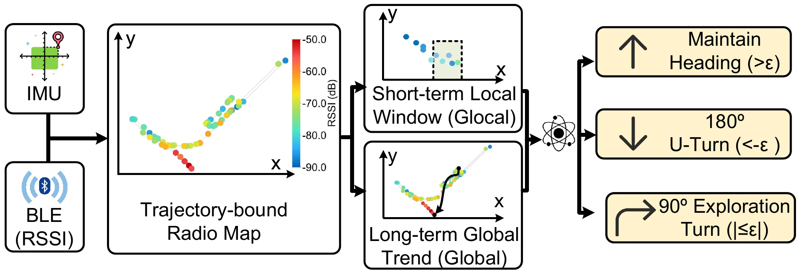
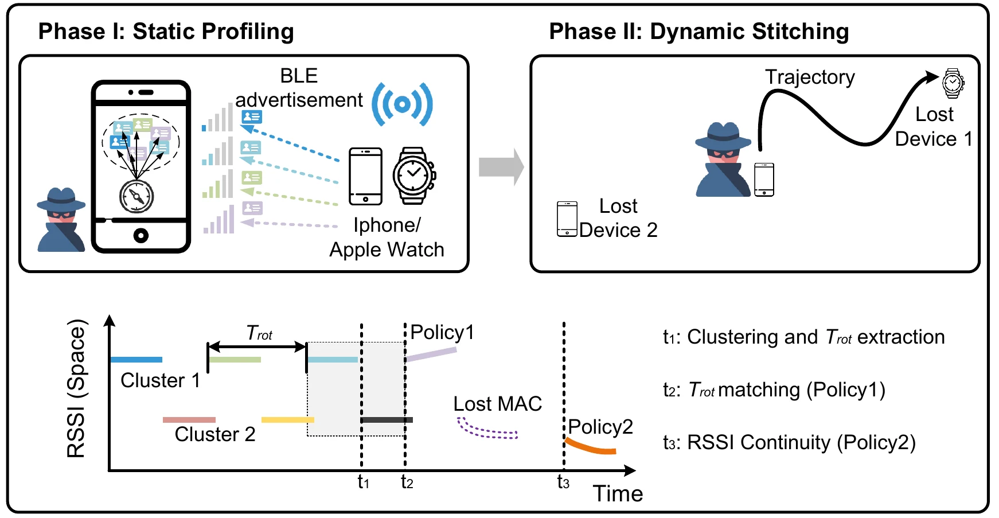
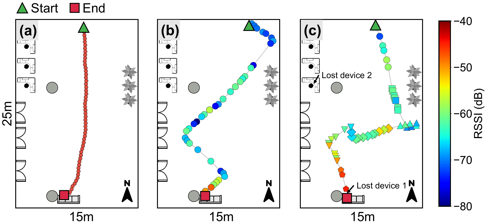

Level 1
Acoustic Direction Finding
Snatcher triggers the non-owner sound on a separated AirTag or AirPods and uses smartphone microphone measurements together with human-body shadowing to infer the target direction.

ACM CCS 2026
Apple Find My Network Exposes Your Lost Devices To Strangers
The Hong Kong University of Science and Technology
Wireless And Networked Distributed Sensing (WANDS)
Acoustic direction finding with SnatchAPP.
Video edited by Jimmy (Wu Chun Ming).
Apple’s Find My network connects nearly one billion devices to locate missing property via Bluetooth Low Energy (BLE). This paper reveals that insecure BLE advertisements and design tradeoffs allow unauthorized discovery and physical theft of lost Apple devices. We develop Snatcher, an attack and analysis framework implemented fully on Android smartphones without specialized hardware.
Snatcher identifies vulnerabilities in unencrypted BLE advertisements, unauthenticated acoustic triggers, and slow MAC address randomization. Through three levels—sound-based direction finding, RSSI–IMU sensor-fusion navigation, and spatial-temporal clustering—our Android-based platform physically tracks and locates lost Apple accessories and devices in real-world tests. Our results highlight a crucial conflict between privacy protection, anti-stalking design, and physical security, urging Apple to strengthen Find My defenses.

Level 1
Snatcher triggers the non-owner sound on a separated AirTag or AirPods and uses smartphone microphone measurements together with human-body shadowing to infer the target direction.

Level 2
For silent devices, Snatcher combines BLE signal trends with the phone’s motion trajectory to estimate whether the user should continue, turn around, or explore a new direction.

Level 3
Static profiling and dynamic stitching associate fragmented BLE observations across rotating MAC addresses, enabling persistent tracking of one physical device.


The AGPL-3.0 artifact includes SnatchAPP, two ESP32 evaluation targets, representative raw traces, and Python reproduction pipelines. The public release is deliberately scoped for responsible evaluation: live navigation and clustering assistance are withheld, while the corresponding algorithms are validated offline.
Evaluate Snatcher only against devices you own. Do not connect to, actuate, or track third-party devices.
@misc{ren2026snatcher,
title = {Snatcher: Apple Find My Network Exposes Your Lost Devices To Strangers},
author = {Zhenyu Ren and Yanbo Zhang and Boya Liu and Mo Li},
year = {2026},
eprint = {2606.21067},
archivePrefix = {arXiv},
primaryClass = {cs.CR},
doi = {10.48550/arXiv.2606.21067},
url = {https://arxiv.org/abs/2606.21067},
note = {To appear in Proc. ACM CCS 2026}
}